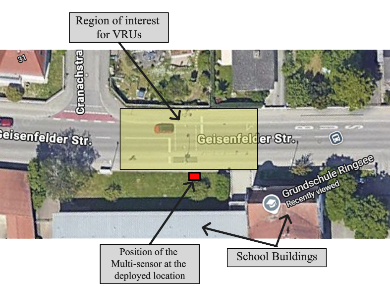
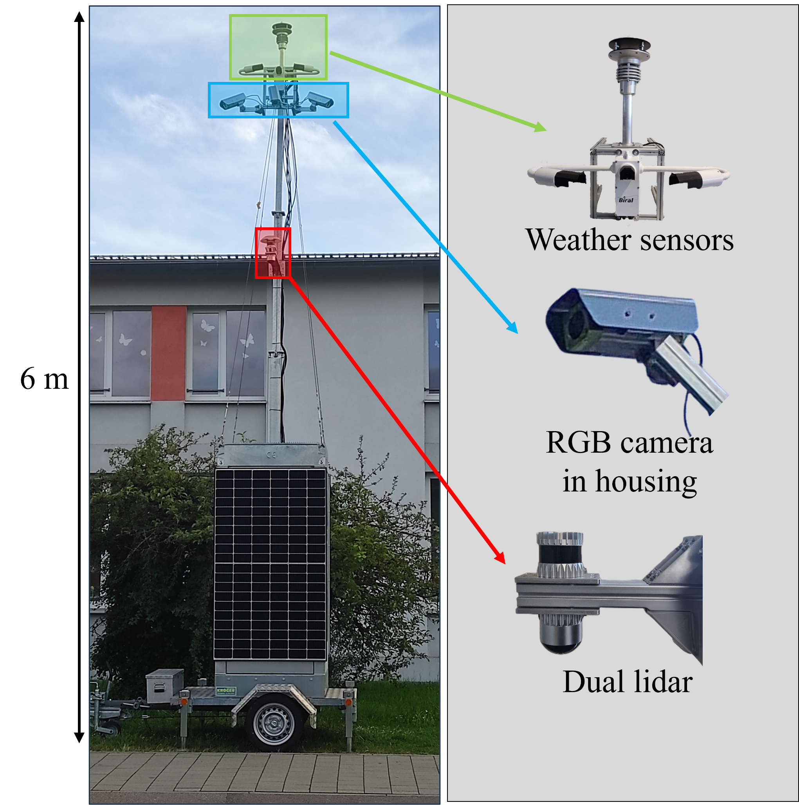
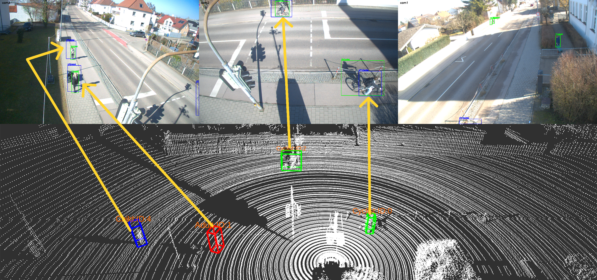
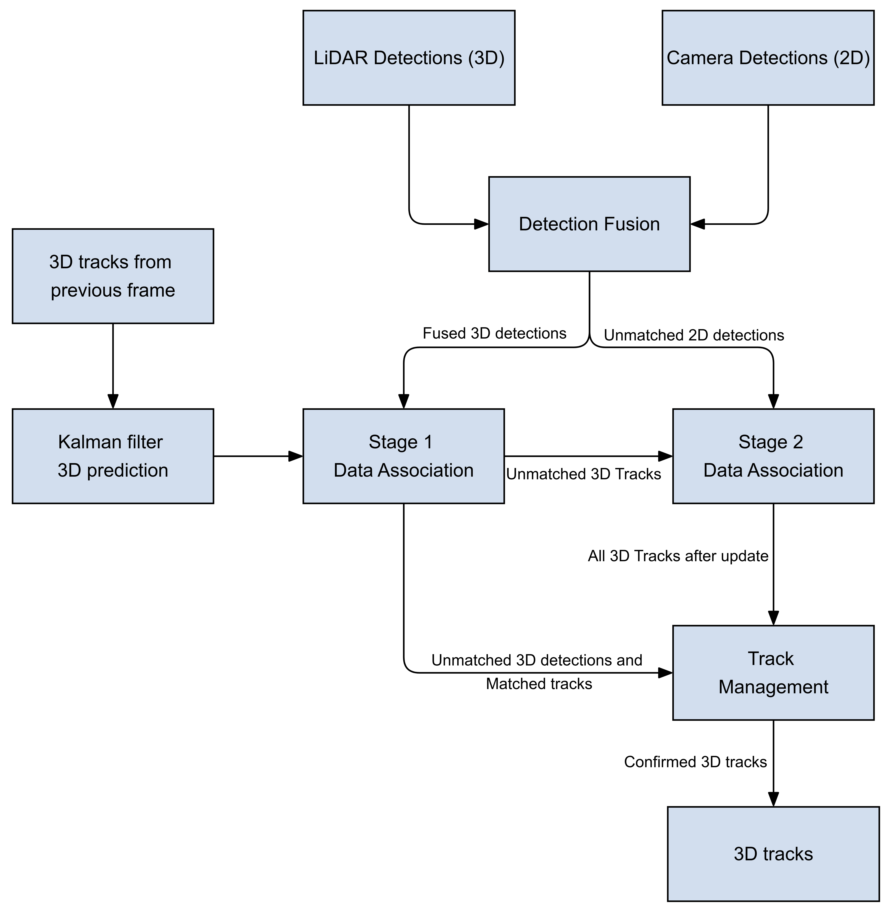

Predict
Previous 3D tracks are propagated using the selected Kalman-filter motion model.
A real-world investigation of how motion-model selection affects 3D multi-object tracking of vulnerable road users in a roadside LiDAR-camera perception system.
Accurate tracking of vulnerable road users is important for roadside safety monitoring and intelligent transportation systems, particularly in safety-critical areas such as school zones.
A roadside LiDAR-camera system provides a stable view of the environment, but the tracker still has to predict an object's state between detections. That prediction depends on the selected motion model.
The thesis therefore investigates how four kinematic models affect 3D multi-object tracking performance for adults, children, cyclists, and a combined pedestrian category.
The evaluation was performed on a deployed roadside perception platform near an elementary school.

Ouster OS1 with 64 channels and inverted Ouster OSdome with 128 channels, mounted at approximately 4.5 m.
Basler Ace 2 cameras mounted at approximately 5.5 m to cover the roadway, crossing and surrounding footpaths.
LiDAR and camera detections were operated at 10 frames per second with hardware-triggered timing.

The hardware infrastructure was developed independently of this work by Agrawal et al. (More about the sensor setup) →
Ground truth trajectories were manually annotated on LiDAR point clouds and used as the reference for evaluation.
Adult and child pedestrians were analysed separately to evaluate their motion characteristics independently, while a combined pedestrian category was also included for overall evaluation.
The dataset contains 22 scenes and 5,333 frames, with an average scene duration of 24.2 seconds. Cyclists are comparatively underrepresented it is due to the natural distribution of cyclists in the real world, so cyclist-specific results should be interpreted with that smaller sample in mind.
Camera detections provide semantic labels while LiDAR provides the 3D spatial representation used by the tracker.
The LiDAR-based 3D object detection pipeline is provided by the industrial partner NewSense. This software processes the raw point cloud data from both LiDAR sensors and outputs 3D bounding box detections, including position, dimensions, and heading angle for each detected object.
Camera-based detection is performed using a YOLO11s model, which was retrained on a custom dataset to detect the three VRU classes(adults, children, and cyclists). The retrained model produces 2D bounding box detections in the image plane for each camera stream. This was done during the internship at Fraunhofer IVI.
For each 3D LiDAR detection, the eight bounding-box corners are calculated from its centre, dimensions and yaw angle and projected into the three camera image planes using the calibrated sensor geometry.
Projected 3D boxes are compared with YOLO11s camera detections using 2D Intersection over Union. The Hungarian algorithm maximises the total similarity, with the largest projected area used to select between multiple valid camera views.

All four motion models were evaluated inside the same tracking framework so that the model itself remained the main variable.

Previous 3D tracks are propagated using the selected Kalman-filter motion model.
Fused 3D detections are associated to predicted tracks using scaled distance and Hungarian assignment.
Unmatched tracks can be kept alive using image-space IoU against unmatched camera detections.
Tracks are initialised, confirmed and deleted using minimum-hit and maximum-age rules.
The following four motion models were considered, as they are among the most widely used models for object tracking.
Linear Kalman Filter · 10-state vector
Linear Kalman Filter · 13-state vector
Extended Kalman Filter · 10-state vector
Extended Kalman Filter · 11-state vector
Filter noise and tracker parameters were tuned before the final comparison. The same tracking pipeline was then run independently for CV, CA, CTRV and CTRA.
| Motion model | 3D gate τ3D | Max age Nmax | 2D IoU τ2D | Min hits Nmin |
|---|---|---|---|---|
| CV | 1.0 | 5 | 0.4 | 2 |
| CA | 1.0 | 5 | 0.4 | 2 |
| CTRV | 1.5 | 5 | 0.3 | 2 |
| CTRA | 1.5 | 5 | 0.4 | 2 |
The results show that greater motion-model complexity did not consistently improve tracking under the evaluated roadside sensing conditions.
CV achieved the strongest overall balance between tracking accuracy, localisation, identity continuity and trajectory coverage for the investigated school-crossing scenario.
| Category | Metric | CV | CA | CTRV | CTRA |
|---|---|---|---|---|---|
| Adults | MOTA ↑ | 56.88 | 56.44 | 52.90 | 53.63 |
| HOTA ↑ | 65.30 | 65.54 | 57.41 | 59.10 | |
| Children | MOTA ↑ | 42.52 | 40.82 | 39.16 | 39.78 |
| HOTA ↑ | 39.32 | 39.19 | 31.22 | 32.45 | |
| Cyclists | MOTA ↑ | 52.67 | 52.67 | 49.41 | 51.69 |
| HOTA ↑ | 48.94 | 49.72 | 42.62 | 44.16 | |
| Pedestrians | MOTA ↑ | 74.07 | 73.14 | 69.33 | 69.96 |
| HOTA ↑ | 67.04 | 66.97 | 56.34 | 58.21 |
Values are percentages. Best values within each metric row are highlighted. IDSW, fragmentation and trajectory-coverage metrics were also evaluated in the thesis.
* For visualization purposes, the video displays the 3D detections within a virtual representation of the environment, along with their tracking IDs and spatial positions. As the analysis focuses on vulnerable road users (VRUs), detections corresponding to vehicles are excluded from the visualization.
CTRV and CTRA introduce additional yaw-rate and acceleration states, but neither consistently surpassed the linear models in the main pedestrian metrics.
Its smaller state vector requires fewer motion variables to be estimated, making it less sensitive to noisy orientation measurements and short-term motion variations. This is particularly relevant for vulnerable road users, whose smaller physical dimensions can result in greater relative variation in their observed motion.
CA often reduced identity switches and can be preferable when association continuity is prioritised over the strongest overall accuracy.
Missed detections, noisy boxes, class inconsistencies, occlusions and duplicate detections can affect tracking performance independently of the motion model.